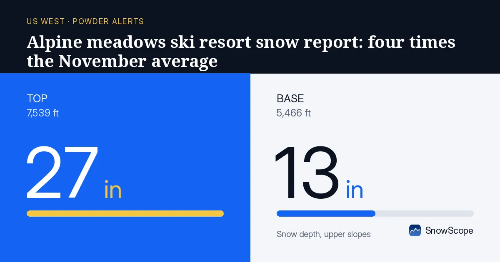
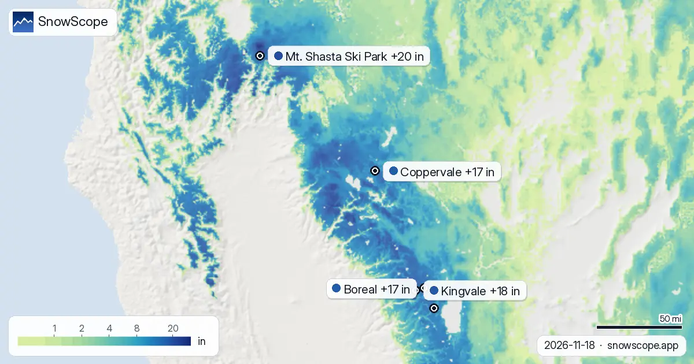

Alpine Meadows ski resort snow report: four times the November average
Alpine meadows ski resort snow report – A series of storms has filled the mountains with snow two weeks ahead of schedule across the US West. At Palisades Tahoe Alpine Meadows, upper slopes now carry 75 cm (2,589 m)—seven times the amount that usually sits there in mid-November—with more arriving this week.
See the live snow forecast for Palisades Tahoe Alpine Meadows in the SnowScope appSnow depth, powder alerts and the 3D map, free.
The water store is building fast
Palisades Tahoe Alpine Meadows holds 75 cm of snow on its upper slopes today. That depth is unusual for this date: the November average at that height is about 10 cm. The snowpack there is storing water at a rate that rivals peak seasons. Snow at higher elevations (above 2,500 m) holds more water weight than the same depth in spring, because new snow is less settled.
Across the region, 168 out of 193 resorts have snow on the ground today, up from 152 five days ago. The snow-covered area has surged from 270,260 square km to 730,170 square km in the same period—a signal that storms have been widespread and substantial.
| Resort | Snow depth | New snow, 72 h | Coming, next days | Top |
|---|---|---|---|---|
| Mt. Shasta Ski Park | 31 in (79 cm) | 20 in (52 cm) | 6 in (14 cm) | 7,539 ft (2,298 m) |
| Kingvale | 23 in (59 cm) | 18 in (45 cm) | 25 in (64 cm) | – |
| Boreal | 26 in (65 cm) | 17 in (43 cm) | 23 in (59 cm) | 7,700 ft (2,347 m) |
| Coppervale | 12 in (31 cm) | 17 in (43 cm) | 14 in (36 cm) | 5,820 ft (1,774 m) |
| Palisades Tahoe Alpine Meadows | 30 in (75 cm) | 15 in (39 cm) | 23 in (59 cm) | 8,494 ft (2,589 m) |

Where the heaviest snow fell
Mt. Shasta Ski Park received the most rain-on-snow risk this past 72 hours. Near the resort, one storm cell dropped 98 cm (39 in) in that time window, with another 57 cm (22 in) falling 36 km away. Mt. Shasta's upper slopes now sit at 79 cm (31 in), and 46 cm (18 in) fell just yesterday alone.
Kingvale also collected heavy snow: 45 cm (18 in) in 72 hours, with 21 cm (8 in) in the past day. Measured station data support these model estimates. Aneroid Lake at 2,265 m recorded 30 cm (12 in) of new snow by 2026-11-16, while Echo Peak at 2,332 m reported 28 cm (11 in) over the same period. These are real measurements at fixed points, not forecasts, and they confirm the model's picture.
What the freezing level tells us
The freezing level—the height where snow turns to rain—has been a critical factor. At Boreal yesterday, the freezing level swung between 1,070 m (base elevation 2,186 m) and 1,910 m, meaning some slopes near the base caught rain while the upper mountain stayed dry. At Mt. Shasta, the range was 1,160 m to 1,400 m, so the base elevation of 1,666 m was partly in the rain zone.
This matters for water storage. Rain soaks into the snowpack, adding density and water content without increasing the visible depth. Where snow fell at higher elevations, the new water has settled into a denser layer. By 2026-11-20, the freezing level at Boreal is forecast to drop dramatically—as low as 50 m—meaning fresh snow should reach all elevations on that day.
More snow is in the forecast
Three more days of snow are coming. By 2026-11-21, the region is forecast to hold 900,910 square km of snow cover, up from today's 730,170 square km. At Palisades Tahoe Alpine Meadows, the model expects another 59 cm (23 in) in the next few days, with 45 cm (18 in) arriving on 2026-11-19 alone. At Mt. Shasta, another 14 cm (5 in) is in the forecast.
Kingvale faces the heaviest incoming snow: 64 cm (25 in) over the same period, concentrated on 2026-11-19 with 49 cm (19 in) expected that day. This fresh input will push the total snowpack above 2,500 m even higher, adding more water storage in the upper basin.
How far ahead of normal we are
Mt. Shasta Ski Park's mid-height snow depth (1,982 m) is now 42 cm, compared to the long-term average of 10 cm for this date. That is 420 percent of normal. Looking at the past 46 winters, today's snow depth at that height ranks deeper than 37 of them. This is not a fluke year; it is a genuinely exceptional start to the season.
The water year ahead will depend on what happens next. If this early snow persists and builds through December and January, the spring melt will feed reservoirs and rivers with more than average carryover. If a warm, dry period follows, some of this early snow will consolidate or partly evaporate. The first storm has done its job; the forecast for the next few days suggests the second storm is arriving on schedule.
What to watch
The transition between storm systems will be brief. Today and tomorrow the snow will continue. By 2026-11-20, as the freezing level drops, the entire mountain should catch new snow down to the base. The thaw and refreezing cycle from the warmer days this week may have created a crust layer under new powder, so conditions will vary by slope. Check the latest avalanche bulletin from avalanche.org before going off-piste, as fresh snow on crust can hold instability.
Tips for skiers
- At elevations above 2,000 m on Palisades Tahoe Alpine Meadows, upper slopes carry 75 cm of dry powder from recent storms. The base carries only 34 cm, so lower runs may have thin cover over rocks.
- 2026-11-19 will bring the most snow this week: 45 cm (18 in) is forecast at Palisades Tahoe Alpine Meadows. The freezing level on 2026-11-20 drops to 50 m, so fresh snow will fall at all elevations that day.
- Boreal's avalanche danger today is moderate (level 2). Check avalanche.org (US national portal) before skiing off-piste, especially in gullies and under cliffs where new snow sits on a crust from the warmer days earlier this week.
- Mt. Shasta Ski Park received 46 cm (18 in) in 24 hours yesterday. Expect wind-loaded northeast-facing slopes to hold more weight than the official depth—probe carefully before committing.
About these numbers
Resort snow depths are the deepest snow on the resort's upper slopes from the SnowScope snow model (about 1 km, run of 18 November); they are estimates for an area, not a measurement at one point. Station values are measurements on the date shown. Forecasts can change. Always read the official avalanche bulletin before going off-piste.
Official avalanche bulletins: avalanche.org (US national portal)
Cite this report
For research, teaching or the press: the numbers and charts are free to reuse under CC BY 4.0 with this citation.
SnowScope (2026), Alpine Meadows ski resort snow report: four times the November average, https://snowscope.app/blog/en/2026/11/us-west-palisades-tahoe-alpine-meadows-fresh-snow-powder-alert-18-november-2026.html, accessed 2026-11-18
SnowScope (Atlas Labs). (2026, November 18). Alpine Meadows ski resort snow report: four times the November average. SnowScope snow reports. https://snowscope.app/blog/en/2026/11/us-west-palisades-tahoe-alpine-meadows-fresh-snow-powder-alert-18-november-2026.html
BibTeX
@misc{snowscope2026uswestpalisadestahoealpi,
author = {{SnowScope (Atlas Labs)}},
title = {Alpine Meadows ski resort snow report: four times the November average},
year = {2026},
month = nov,
howpublished = {\url{https://snowscope.app/blog/en/2026/11/us-west-palisades-tahoe-alpine-meadows-fresh-snow-powder-alert-18-november-2026.html}},
note = {Published 2026-11-18 14:19 UTC; accessed 2026-11-18}
}· CC BY 4.0 · Methods, data and tools →
Palisades Tahoe Alpine Meadows: snow and temperature by height, this winter vs last (tools) →
Follow Palisades Tahoe Alpine Meadows
Free: a message when fresh snow is coming, and the forecast every morning.
More snow reports

Bogus Basin snow check for Boise skiers on 13 November 2026: no snow on the ground yet, rain and mixed snow this weekend with a snow level near 6,300 to 6,800 ft, then colder air and about 8 in at the summit by next week.

Alpental snow forecast for 13 November 2026: about 1 in on the upper mountain, rain almost to the summit this weekend with a snow level near 5,400 to 5,600 ft, then 4 to 5 in of mixed rain and snow up top next week.